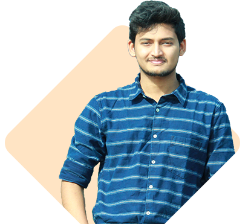

Portfolio
of
Prangon Ghose
About Me
Educational Qualification
| Name of Degree | Name of Institute | Result | Duration |
|---|---|---|---|
| Bachelor of Science in Nuclear Science & Engineering | Military Institute of Science & Technology | CGPA: 3.60 (on a scale of 4.00) | 4 years |
| Higher Secondary Certificate under NCTB, Bangladesh (Dhaka Board) | Notre Dame College | GPA: 5.00 (on a scale of 5.00) | 2 years |
| Secondary School Certificate under NCTB, Bangladesh (Dhaka Board) | St. Gregory's High School | GPA: 5.00 (on a scale of 5.00) | 10 years |
Skills
Technical Skills
| Type of Skills | Name of Skills | Proficiency Level |
|---|---|---|
| Office Applications | MS Word MS Excel MS Powerpoint |
Expert Intermediate Expert |
| Programming Languages | C C++ Python HTML CSS JavaScript |
Intermediate Intermediate Intermediate Beginner Beginner Beginner |
| Simulation Softwares | OpenMC MATLAB AutoCAD Cubit |
Intermediate Intermediate Beginner Intermediate |
External Skills
- Applied Data Science I: Scientific Computing & Python (acquried with Honors)
Provided by: WorldQuant University
Duration: 16 Weeks
DescriptionEarners of this badge have completed a comprehensive introduction to scientific computing, Python, and related tools used by data scientists. They can use Python to read, clean, process, and analyze real-world data by following good programming practices such as using functions, choosing the appropriate data structures, and writing readable, maintainable code. To determine the statistical significance of the results of their analysis, they can apply statistical analysis and hypothesis testing.
- Applied Data Science II: Machine Learning & Statistical Analysis (acquried with Honors)
Provided by: WorldQuant University
Duration: 16 Weeks
DescriptionEarners of this badge are able to build machine learning models to make predictions on real-world data. They understand the best way to treat, clean, and encode data and how to choose the appropriate machine learning models for the task. They can properly tune the model to create a generalized model that performs well on both a training set and on out-of-sample data. They can build models using text and time series data. Earners are also proficient in using Python's scikit - learn package.
-
Training on MATLAB Simulink
Provided by: Pantech ProLabs India Pvt Ltd
Duration: 30 Days -
Training on AI using MATLAB
Provided by: Pantech ProLabs India Pvt Ltd
Duration: 30 Days -
Training on AI using Python
Provided by: Pantech ProLabs India Pvt Ltd
Duration: 30 Days -
Training on Image Processing using MATLAB
Provided by: Pantech ProLabs India Pvt Ltd
Duration: 15 Days -
Training on Design of Electric Vehicle using MATLAB
Provided by: Pantech ProLabs India Pvt Ltd
Duration: 15 Days -
Internship on Machine Learning
Provided by: Pantech ProLabs India Pvt Ltd
Duration: 30 Days
Research Work
Projects & Workshops
-
Workshop on VVER Reactor simulation and accident analysis
Duration: 2 weeks
DescriptionIt was a simulation workshop where basics of a VVER reactor was simulated in Bangladesh Atomic Energy Commission using VVER-1200 simulator and different types of nuclear accidents were analyzed.
-
Workshop on nuclear food irradiation
Duration: 2 weeks
DescriptionNuclear food irradiation is a process where food is irradiated to remove several harmful organisms. In this workshop various processes of nuclear food irradiation was discussed.
-
Presentation on "Radiation Absorption: Developing a novel shielding material
Ceremony: Nuclear Festival of Military Institute of Science & Technology, Dhaka, Bangladesh
AbstractUsing nuclear radiation and nuclear energy in various sectors of science has become a well-known tradition. But before executing anything we need to think about the safety measures first. Radiation and nuclear terrorism has become one of the major problems of the present world. Other than this radiation is the most important and prominent issue in modern age because it threatens human health and causes damages to electrical and software systems. Several studies have demonstrated the potential cancer, cardiovascular, and musculoskeletal impact radiation. As a result need of a more accurate, less harmful and less expensive shielding material is gradually increasing. That led us to our current study. In most of the cases Lead (Pb) is being used as an ideal shielding material. One of the sources for that is NCRP Report No. 34 - Medical X-Ray and Gamma-Ray Protection for Energies up to 10 MeV - Structural Shielding Design and Evaluation. But it has significant problems such as being extremely expensive, having toxic effects and failing in neutron shielding. Neutron is the most hazardous particle among other radiation types. Keeping all these in mind, we have tried to figure out a novel, non-toxic, inexpensive shielding material which can be used for shielding against both gamma radiation and neutron radiation. Initially Sodium penta-borate is synthesized. The reason of selecting Sodium penta-borate is that, from experiments done with this material to look upon its shielding ability it can be said that, sodium pent borate is a novel neutron shielding material outstandingly. The fabric which contains only 230 g of Sodium Penta-borate has reached 75.21% absorption rate of neutron. But it is not an ideal shielding material against gamma-rays. Therefore Sodium penta-borate and Barium Sulphate have been used in a combination so that a novel shielding material can be produced against both neutron radiation and gamma rays. From further experiments done with this shielding material has shown the result that this has given a respectively better performance against gamma and neutron radiation. Interior material of shelter, nuclear protective clothing, space shuttle and aircraft radiation shielding paints can be produced with this material. It should be emphasized that, radiation experiments with Sodium Penta borate is a novel implementation in the world to the best of our literature knowledge.
-
Project on "Design of an Unmanned Aerial Vehicle for Radiological Environmental Surveillance"
Location: Military Institute of Science & Technology, Dhaka, Bangladesh
AbstractThis project represents the design and construction of an unmanned aerial vehicle that can be used for radiological environment surveillance of nuclear facilities for ensuring regulatory compliance of a nuclear operator. The unmanned aerial vehicle will also work as an early detection system in case of any nuclear accident and thus save lives. This unmanned aerial vehicle has been equipped with a Geiger - Müller (GM) counter to measure background radiation of an area in counts per minute and a memory module for storing the measured counts. It is capable of flight along a predetermined route without any intervention and can also be controlled from a range of about 1.5 km using transmitter. It can also measure height using a preinstalled barometer and has been used to measure counts per minute in air in Dhaka city as a proof of concept.
-
Project on "Radiological Environmental Surveillance using an Unmanned Aerial Vehicle in Mirpur Cantonment, Dhaka"
Location: Military Institute of Science & Technology, Dhaka, Bangladesh
AbstractIn this project, we assembled and demonstrated an Unmanned Aerial Vehicle (UAV) which was used to conduct a radiological environmental surveillance using a Geiger - Muller (GM) counter. To ensure environmental protection and enhancing nuclear safety, routine surveillance of radioactivity is a must. Biggest challenge in conducting frequent radiological environmental surveillance is limiting the exposure of the radiation workers. Using remotely controlled and automated robotics (e.g. UAV) can overcome this challenge. It also comes with the added benefit of requiring much less time while surveying a vast area. The UAV flies along a predetermined route or is remotely controlled while collecting radioactivity data using GM counter in counts per minute (cpm). The data is stored in an SD card which is later extracted for analysis. The assembled GM counter is 96% efficient in measuring gamma radiation. The surveillance conducted on Mirpur Cantonment, Dhaka shows the average absorbed dose is 2.155 mSv/year.
-
A research on "Analysis of Radiation Dose Enhancement in Brachytherapy in presence of Gold (Au),
Silver (Au) and Gadolinium (Gd) Nanoparticles using OpenMC"
Duration: 1 year
Location: Military Institute of Science & Technology, Dhaka, Bangladesh
AbstractIn this study, we analyzed Gold (Au), Silver (Ag), Gadolinium (Gd) nanoparticles as dose enhancing agents in brachytherapy using Monte Carlo simulation. In brachytherapy, it is vital that the tumor cells receive absorbed dose as high as possible while minimizing dose received by the adjacent healthy cells. This can be achieved by injecting metals with high atomic number as nanoparticles into the tumor. When gamma ray released by the brachytherapy seed interacts with the nanoparticles due to the high electron density, photoelectric effect takes place. The secondary directly ionizing radiation thus produced increases absorbed dose in the tumor cells while the healthy cells receive a lower dose. In this study OpenMC was used for the overall simulation over realistic model of human eye. Simulation was run for various volume fractions of nanoparticles inside a tumor using realistic human eye model. OpenMC is unable to calculate absorbed dose directly and so the hand calculation was done partially to approximate dose and dose rate. There are several parameters which govern the outcome of the dose enhancement in presence of metallic nanoparticles. Absorbed reaction rate, photoelectric reaction rate, scattering reaction rate, heating rate and pair production reaction rate are such parameters which affects dose enhancement significantly. This study describes these parameters explicitly. Parameters governing dose enhancement in tissues were scored in the simulation which prove the validity of the concept. Gold was found the best dose enhancer at 3% volume of the tumor cell.
Publications
- F. Ahmed and P. Ghose, "Design of an Unmanned Aerial Vehicle for Radiological Environmental Surveillance," International Conference on Electronics and Informatics, Dhaka, 2021.
- P. Ghose, M. P. Plaban, R. Rafayet, N. B. Azam and M. G. Zakir, "Radiological Environmental Surveillance using an Unmanned Aerial Vehicle in Mirpur Cantonment, Dhaka," 41st Annual Conference of Canadian Nuclear Society, Toronto, 5-8 June, 2022. (Click here to read)
Activities
- Vice President at MIST Nuclear Engineering Club
- Member of MIST Robotics Club
- Member of MIST Literature & Cultural Club
- Former member of Notre Dame Science Club
- Former Vice President of Gregorian Science Club
- Former member of Gregorian Cultural Club